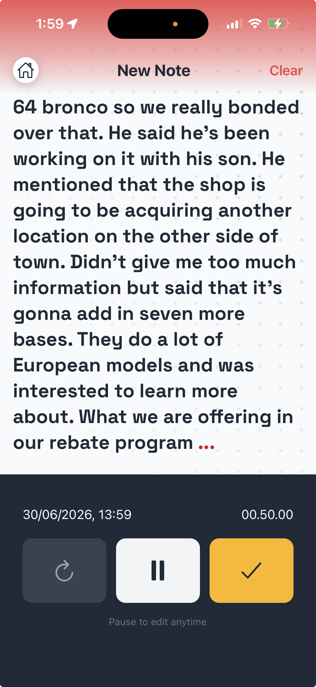
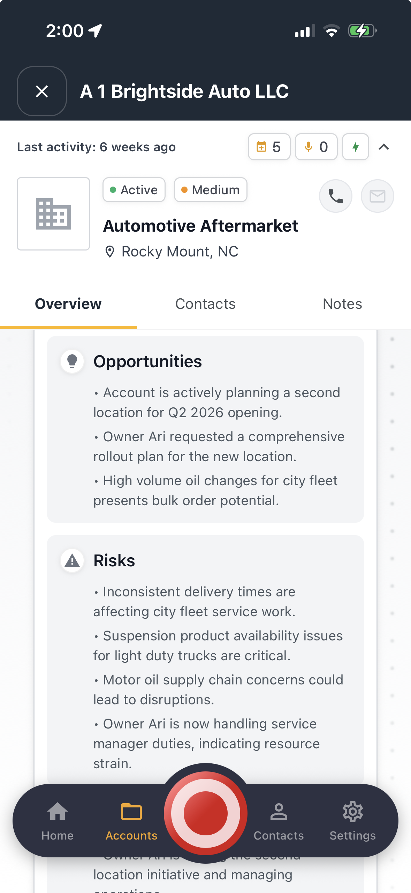
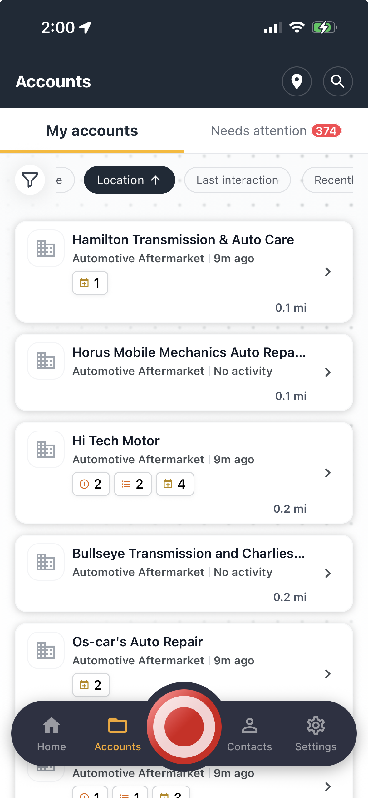

Executive briefing · Prepared for WHI
Salesforce provides a reliable infrastructure for many large companies to have a single stop for customer interactions, emails, campaign performance, and more. While AI functionality like Agentforce has provided support on administrative work and summarization, it often misses the mark when it comes to building a system of action, due to its limited understanding of industry-specific needs and workflows. Designed for the aftermarket, with a team that understands parts distribution, Tromml turns the calls and conversations your channel already has into an easy-to-use next best action engine for both WHI and its partners.
★ Winner · 2025 MEMA Innovation Award
Managing relationships with hundreds of distributors and hundreds of thousands of shop buyers gives WHI an incredible amount of data. That information is available for analysis to show how parts are performing, but it can be difficult to tell the story behind the metrics.
The information exists in calls, emails, field visits, and even trade show floors. Capturing that information can be challenging, especially for field work. But the even bigger challenge? Pulling out actionable signals that focus managers' attention on the activities that matter most, so they can set priorities and guide rep activity. Salesforce can hold and report this data, but its background as a database makes it hard to become a system of action your team can rely on to spend their time on the right things.
Agentforce provides some support through report creation, summarization, and administration, but our experience in the aftermarket has shown it rarely changes rep behavior. And because of ongoing challenges with data entry, a lot of information never makes it into the system of record at all.
Reps get more done
One voice note replaces the call report. When one person covers a multi-state territory, the day plans itself around the accounts that need attention, and every rep starts each visit already briefed from their own history.
Managers finally see
Field activity rolls up in one view whether it came from your territory managers or an agency partner. What customers are saying, where the risk sits, who needs direction today. No waiting for a partner's month-end report.
Strategy meets execution
A push on multi-seller signups or SMS integrations becomes each rep's ranked priorities the same week, and wins come back sorted the way you already count them: net new, order influence, SMS connection.
1 Capture is effortless
Minecart is basically a big red button a rep talks into after a visit. No forms, no call reports. It becomes a clean note tied to the account.

Capture by talking. One voice note, no forms.

Walk in briefed. Opportunities and risks from past visits.

The list ranks itself by what needs attention.
2 Aggregate calls and give your team role-level action items
A conversation might be a voice note from the truck, a recorded inside sales or service call, or an agency partner's report. Same engine either way. We read every one, pull out the follow-ups, the part requests, and the competitor mentions, then create the task, brief the rep, and flag the manager. Nothing waits for someone to re-listen to a recording.
One engine, every conversation. Capture flows in once, action flows out to everyone who needs it.

Recorded calls, read and turned into tracked opportunities. Real deals surfaced and tied to the account.
We just watched this play out inside one of the country's largest parts distributors. They layered Salesforce's own AI on top for field dictation. It writes a decent summary, and then nothing happens. No task, no owner. A thousand-dollar return sat in a note nobody acted on. And because every call gets summarized one at a time, nobody noticed shop after shop asking for the same later delivery cutoff. The difference comes down to three things:
The same engine builds stakeholder-ready reporting on its own. Our rep agency customers send manufacturer and distributor partners a monthly report built from what actually happened in the field. It used to take three people to assemble. Now it builds itself.

Beacon Ridge and Merrick Fastener Group are fictional, built to show the report format. The workflow is the one running today.
Fifteen minutes to set up. You see what's in your own data, and you decide whether it goes further.
Get a free Signal AnalysisWe're named after the trommel, the mining equipment that separates the dirt from the gold. That's the whole job: pull the signal out of what your team is already saying and hearing, and get it to the person who can act on it. We think this industry's biggest competitor is waste, and we'd rather fight waste than fight each other.
Trusted by


Built for the aftermarket, by people who know it